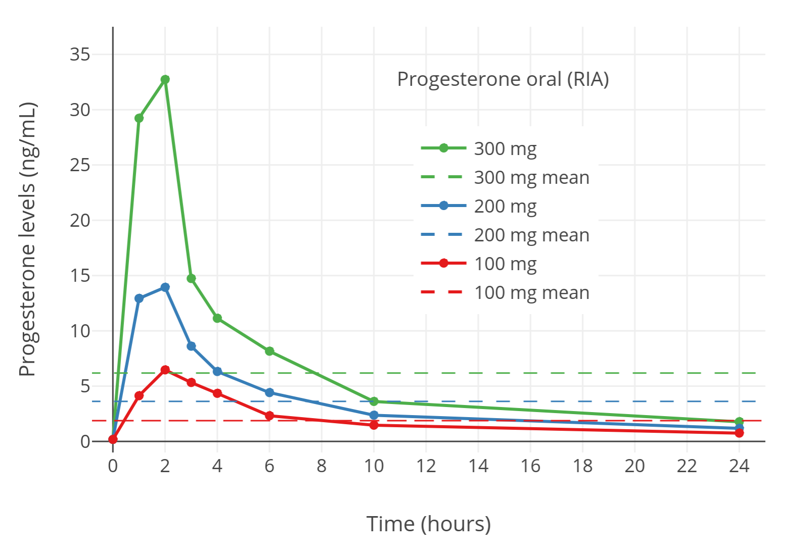

Oral Progesterone Achieves Very Low Levels of Progesterone and Has Only Weak Progestogenic Effects
By Aly | First published August 4, 2018 | Last modified March 30, 2023
Abstract / TL;DR
Oral progesterone is the most widely used form of progesterone in transfeminine hormone therapy. Because of previous studies using inaccurate blood tests (immunoassays without adequate chromatographic purification), it was thought that typical therapeutic dosages of oral progesterone produced progesterone levels that reached typical luteal-phase levels in cisgender women (which range from about 7 to 22 ng/mL). However, newer studies using more accurate blood tests (immunoassays with adequate purification and mass spectrometry-based assays) have shown that 100 mg/day progesterone—with or without food—achieves very low peak progesterone levels of only about 2 to 3 ng/mL and average progesterone levels over 24 hours of only about 0.1 to 0.6 ng/mL. In accordance, oral progesterone has often shown only weak progestogenic effects in clinical studies. Higher doses of oral progesterone that might achieve better levels are limited by persistingly low progesterone levels, pronounced neurosteroid side effects caused by the first pass of progesterone through the liver, and substantial variability between individuals. While the progesterone levels with oral progesterone are apparently sufficient for endometrial protection in cisgender women, they are unlikely to be adequate for desired effects in transfeminine people. For these reasons, transfeminine people and their clinicians may wish to avoid oral progesterone if the aim is therapeutic progestogenic effects. Instead, non-oral forms of progesterone with greater bioavailability like rectal or injectable progesterone can be used. Alternatively, progestins, which are likewise fully effective progestogens, can be employed.
Introduction
The major female sex hormones are estrogens and progestogens, and both may be used in transfeminine hormone therapy. Progestogens are useful in transfeminine people for helping to suppress testosterone levels and possibly though not certainly influencing breast development. Progestogens include progesterone as well as synthetic progestogens known as progestins. Progesterone has relatively unfavorable pharmacokinetics, which has been overcome with progestins. However, progestins have differing pharmacodynamic properties compared to progesterone, which can potentially be unfavorable. As such, there is interest in using progesterone instead of progestins in transfeminine people and other populations like cisgender women despite its poor pharmacokinetic properties.
Progesterone is available in formulations for use via a variety of different routes, including oral, sublingual, topical, vaginal, rectal, and injectable administration (Wiki; Table). Among these routes, oral administration is the easiest and most convenient, and in relation to this, oral progesterone is the most widely used form of progesterone in transfeminine people. However, the pharmacokinetic problems of progesterone limit the favorability of oral progesterone. Moreover, these limitations of oral progesterone actually appear to be much more substantial than is generally realized, a fact that has been obscured by methodological limitations of many—but not all—of the pharmacokinetic studies that have characterized oral progesterone. The purpose of this article is to explain and review these findings, as well as to explore solutions and alternatives to oral progesterone for progestogen therapy in transfeminine people.
Progesterone Levels with Oral Progesterone
Oral micronized progesterone, or simply oral progesterone, is the form of progesterone that is used by the oral route as a pharmaceutical medication. It is an oil suspension of micronized progesterone crystals contained in gelatin capsules. The formulation is marketed under brand names including Prometrium, Utrogestan, and Microgest, among many others. Oral progesterone has very low bioavailability (≤10%) due to the first pass through the intestines and liver with oral administration. As a result of the first pass, most of the delivered progesterone with oral progesterone is metabolized into neurosteroid metabolites such as allopregnanolone and pregnanolone before reaching the bloodstream (de Lignieres, Dennerstein, & Backstrom, 1995). This is why oral progesterone has alcohol-like side effects like sedation that are not shared by typical doses of non-oral progesterone such as vaginal progesterone or progesterone by injection. In spite of the low bioavailability of oral progesterone, typical clinical doses of oral progesterone, such as 100 to 300 mg/day, have been reported to produce progesterone levels measured with immunoassays that are similar to those in the normal luteal phase of the menstrual cycle in cisgender women (Simon et al., 1993). For this reason, it has been believed that oral progesterone can achieve high and physiologically adequate levels of progesterone.
| Figure 1: Progesterone levels during the menstrual cycle in normal premenopausal women (Stricker et al., 2006). The dashed horizontal lines are the mean levels for each curve and the dashed vertical line demarcates mid-cycle (when ovulation occurs). Progesterone levels are normally elevated only during the luteal phase. |
|  |
|---|
| Figure 2: Progesterone levels measured by immunoassay after single 100 to 300 mg doses of oral micronized progesterone in postmenopausal women (Simon et al., 1993). The horizontal dashed lines are mean levels over 24 hours. Progesterone levels appeared to reach concentrations comparable to normal luteal-phase levels. However, these levels were in fact not accurate due to the use of immunoassays (Nahoul & de Ziegler, 1994). |
It is now clear that this is not actually the case. Immunoassay is an earlier analytic method that can have issues with accuracy and reliability. In the case of progesterone, the problem with the use of immunoassays is that they have poor specificity in terms of their determinations. The antiserum used in determinations of progesterone with immunoassays cross-reacts with metabolites of progesterone like 5α-dihydroprogesterone, allopregnanolone, and pregnanolone and counts them towards the total for progesterone. Due to the high circulating levels of progesterone metabolites that are formed during the first pass with oral administration, this cross-reactivity has resulted in studies that have used immunoassays (e.g., Simon et al., 1993, among many others) markedly overestimating progesterone levels with oral progesterone (Nahoul et al., 1993; Nahoul & de Ziegler, 1994). Studies that have used analytic methods with better specificity, including liquid chromatography–mass spectrometry (LC–MS)—regarded as the “gold standard” for clinical quantification of sex-hormone levels (Kuhl & Schneider, 2013; Woodward & Rumsby, 2019; Conklin & Knezevic, 2020)—as well as immunoassays in conjunction with adequate chromatographic separation, have found that progesterone levels with oral administration of progesterone are in fact very low (Nahoul, Dehennin, & Scholler, 1987; Nahoul & de Ziegler, 1994; Levine & Watson, 2000; Kuhl, 2011; Kuhl & Schneider, 2013; Davey, 2018).
A notable study using LC–MS found maximal progesterone levels of only about 2 ng/mL and average progesterone levels over a period of 24 hours of only about 0.14 ng/mL after a single 100 mg dose of oral progesterone (Levine & Watson, 2000; Kuhl & Schneider, 2013). Another more recent study with LC–MS found progesterone levels of around 2.5 to 3 ng/mL at peak and average progesterone levels over 24 hours of around 0.6 ng/mL after a single 100 mg dose of oral progesterone with food (Lobo et al., 2019). (It should be noted that intake with food is known to increase the bioavailability of oral progesterone by a few-fold (Wiki; Bijuva FDA Label; Simon et al., 1993; Prometrium FDA Review, 1996; Pickar et al., 2015).) These progesterone levels are well below normal luteal-phase levels of progesterone, which range from 7 to 22 ng/mL with LC–MS (Nakamoto, 2016). Studies that have directly compared quantification of progesterone with immunoassays against more reliable methods have found that immunoassays overestimate progesterone levels by 5- to 8-fold (Nahoul, Dehennin, & Scholler, 1987; Nahoul & de Ziegler, 1994; Levine & Watson, 2000; Kuhl, 2011; Kuhl & Schneider, 2013; Davey, 2018). In one small study of a few individuals, the degree of overestimation varied from 2-fold to 40-fold with several different commercial immunoassays (Sapin et al., 2000). These findings are obscure and still relatively little-known in the scientific and medical communities. In any case, it is clear that oral progesterone achieves progesterone levels that are far lower than once thought and are well below the luteal-phase levels that would be therapeutically desirable for transfeminine people.
 |
|---|
| Figure 3: Progesterone levels measured by immunoassay or LC–MS after a single dose of oral or vaginal micronized progesterone in postmenopausal women (Levine & Watson, 2000; Kuhl & Schneider, 2013). Levels of progesterone with oral progesterone measured by immunoassay were falsely high due to cross-reactivity. Conversely, progesterone levels measured by LC–MS or with vaginal progesterone can be considered accurate. |
| Figure 4: Progesterone levels measured by LC–MS with 100 mg/day oral micronized progesterone taken with food in postmenopausal women (Lobo et al., 2019). The horizontal dashed line is the mean level over 24 hours. Food increases progesterone levels with oral progesterone by about 2- to 3-fold (Bijuva FDA Label; Simon et al., 1993). The progesterone levels measured in this study can be considered accurate to due to the use of LC–MS. |
Therapeutic Implications
Progestogenic Potency and Effects
A variety of perplexing findings on the clinical progestogenic effects of oral progesterone have been made over the decades and can now be readily explained by the newer data on oral progesterone with better analytic methods. Oral progesterone is used in clinical medicine mainly to protect the endometrium from unopposed stimulation by estrogens in menopausal cisgender women and is able to reliably prevent endometrial hyperplasia induced by estrogens even with the low progesterone levels that typical clinical doses achieve (Wiki). However, oral progesterone failed to provide adequate protection against estrogen-mediated endometrial cancer risk in a large observational study (Davey, 2018). Oral progesterone even at very high doses also is unable to produce full endometrial transformation—a normal effect of luteal-phase levels of progesterone—whereas vaginal and injectable progesterone are effective (de Ziegler et al., 2013). For this reason, oral progesterone, in contrast to parenteral progesterone, is considered to be inappropriate for use in assisted reproduction (de Ziegler et al., 2013). Oral progesterone additionally failed to suppress testosterone levels even at high doses (400 mg/day) in cisgender males (Trollan et al., 1993; Wiki). Conversely, progestins, rectal progesterone, and injectable progesterone can all produce robust testosterone suppression in cisgender males (Wiki; Aly, 2019). Similarly, oral progesterone has little or no apparent antigonadotropic effect in menopausal cisgender women, which is again in notable contrast to progestins (Holst, 1983; Holst et al., 1983; Ottosson, 1984; Maxson & Hargrove, 1985; Saarikoski, Yliskosk, & Penttilä, 1990).
Unlike other clinically used progestogens, the addition of oral progesterone to estrogen therapy in menopausal women has not been associated with increased risk of venous thromboembolism (VTE; blood clots) (Wiki). Nor has it been associated with increased breast cancer risk in the short-term (<5 years of therapy) (Wiki). However, with long-term use (≥5 years), the combination of estrogen plus oral progesterone is associated with significantly greater risk of breast cancer relative to estrogen alone similarly to other progestogens (Aly, 2020; Sam, 2020; Wiki; Table). This has been said to be consistent with a weak proliferative effect of oral progesterone on the breasts such that a longer duration of exposure is necessary for a quantifiable increase in breast cancer risk to manifest (Kuhl & Schneider, 2013; Davey, 2018). It is also consistent with preclinical research, which clearly suggests a carcinogenic role for progesterone and progesterone receptor activation in the breast (Kuhl & Schneider, 2013; Trabert et al., 2020). The preceding clinical findings on endometrial efficacy, testosterone and gonadotropin suppression, VTE risk, and breast cancer risk with oral progesterone are in contrast to those with almost all clinically used progestins (with the exception of the oral progesterone-like dydrogesterone). These previously perplexing discrepancies can be readily explained by the very low levels of progesterone that are now known to be achieved with oral progesterone.
Bioavailability, Half-Life, and Duration
Considering the much lower levels of progesterone observed with oral progesterone in studies using reliable analytic methods, the bioavailability of oral progesterone needs to be reassessed. In studies with immunoassays, the bioavailability of oral progesterone has been reported to be around 10% (Wiki). The true oral bioavailability of progesterone is unknown at this time as studies with reliable analytic methods have not been conducted. In any case, it can be assumed that it may be closer to around 1 or 2% based on the findings that immunoassays overestimate progesterone levels by 5- to 8-fold.
The elimination half-life of progesterone with oral progesterone has been determined in studies employing immunoassays to be 16 to 18 hours (Wiki). Based on the fact that the blood half-life of progesterone administered by intravenous injection is very short at a range of only 3 minutes to 1.5 hours (Wiki), the reported half-life of progesterone with oral progesterone is much longer than one would expect. Oral estradiol has a relatively long half-life of 13 to 20 hours due to formation with the first pass of a circulating reservoir of estrogen conjugates that are slowly converted back into estradiol (Kuhl, 2005; Wiki). In contrast to estradiol however, progesterone itself has no available hydroxyl groups for conjugation and an analogous circulating reservoir of progesterone conjugates that can be converted back into progesterone is not known to be the case (Kuhl, 2005).
Studies with more reliable analytic methods like LC–MS have found a half-life of progesterone with oral progesterone of 5 to 10 hours and a duration of highly elevated progesterone levels of only about 4 to 8 hours (Wiki; Graphs). These findings indicate that oral progesterone has a much shorter duration than previously thought as well. As such, if oral progesterone is used, it may be advisable to take it in divided doses multiple times per day to allow for more sustained progestogenic exposure.
Higher Oral Progesterone Doses and Neurosteroid Side Effects
Use of higher doses of oral progesterone than typical doses is likely to achieve dose-dependently higher progesterone levels (Table). However, based on how low progesterone levels are with oral progesterone using reliable analytic techniques, even very high doses would still be expected to achieve only low progesterone levels in most cases. Moreover, high doses of oral progesterone result in very high levels of its neurosteroid metabolites and have been found to produce substantial alcohol-like side effects (i.e., central depression and effects within that umbrella) (Wiki; Wiki). These limitations are likely to preclude higher doses of oral progesterone from being practical.
| Figure 5: Levels of progesterone, allopregnanolone, and pregnanolone in premenopausal women following a single dose of oral progesterone or vaginal progesterone (as a suppository) (de Lignieres, Dennerstein, & Backstrom, 1995). Allopregnanolone and pregnanolone levels were determined by MS-based assays while progesterone levels were measured by immunoassay with chromatographic separation. Hence, the levels should be reliable. |
A Note on Oral Progesterone’s Metabolites
Although progesterone levels with oral progesterone are very low, the metabolites of progesterone are formed in disproportionate amounts with the first pass (Sitruk-Ware et al., 1987; de Lignieres, Dennerstein, & Backstrom, 1995; de Lignieres, 1999; de Ziegler & Fanchin, 2000; Lobo, 2000; Kuhl, 2005). Moreover, while much less potent than progesterone, some of these metabolites have been found to have progestogenic activity similarly to progesterone (e.g., Besch et al., 1965; Junkermann, Runnebaum, & Lisboa, 1977; Lobo, 2000). This activity derives either from them having intrinsic progestogenic activity of their own or from being converted back into progesterone or other progestogenic metabolites (including in an intracrine fashion within tissues, for instance in the uterus). Examples of such metabolites include 20α-dihydroprogesterone, 20β-dihydroprogesterone, 5α-dihydroprogesterone, 3β-dihydroprogesterone, allopregnanolone, and 11-deoxycorticosterone. If the metabolites of oral progesterone contribute significantly to its progestogenic activity, then the progestogenic strength of oral progesterone would be greater than that implied by the progesterone levels that occur with it alone. However, this possibility is only theoretical and there is little literature discussing it. More research would be needed to determine if the metabolites of oral progesterone do indeed play a meaningful role in its progestogenic potency. In any case, oral progesterone is still a relatively weak progestogen based on clinical studies of its progestogenic effects.
Alternative Options to Oral Progesterone
Non-Oral Forms of Progesterone
Non-oral forms of progesterone, such as vaginal progesterone, rectal progesterone, sublingual progesterone, and progesterone by injection, have been found to achieve much higher progesterone levels than oral progesterone (Wiki). They can be used instead of oral progesterone to achieve higher and more adequate progesterone levels. Unfortunately however, while more effective than oral progesterone, non-oral progesterone routes have various limitations of their own.
Vaginal progesterone is of course not possible in transfeminine people who have not undergone vaginoplasty. And in those who have undergone vaginoplasty, the lining of the neovagina is either skin (penile inversion vaginoplasty) or intestine (sigmoid colon vaginoplasty) rather than the normal vaginal mucosa. As such, the absorptive characteristics of neovaginal administration are likely not the same as vaginal administration (Aly, 2018). It is notable that transdermal progesterone achieves very low progesterone levels similarly to oral progesterone and is not a good option for progesterone therapy (Wiki; Hermann et al., 2005; Graph). Progesterone levels with neovaginal administration of progesterone in those who have undergone penile inversion vaginoplasty are likely to be low similarly.
{kind=link}
Rectal progesterone is an excellent route that achieves high progesterone levels comparable to the levels of progesterone that occur during the normal luteal phase (Wiki; Graphs). It has a somewhat short duration and twice daily use may be warranted for more sustained levels however. A more important problem is that the availability of pharmaceutical rectal progesterone suppositories throughout the world is limited and they are not marketed in most countries (Wiki). In any case, rectal progesterone suppositories may be available from compounding pharmacies in some countries. In addition, oral micronized progesterone capsules are available ubiquitously and have been administered vaginally instead of orally with success (Miles et al., 1994; Wang et al., 2019). Administration of oral micronized progesterone capsules rectally instead of orally likewise may be effective and may achieve much higher progesterone levels than oral administration (Aly, 2018). However, rectal administration of oral progesterone capsules has not been formally studied. Although rectal progesterone is effective, it is fairly inconvenient. This may be especially true with long-term therapy. In any case, of the available non-oral forms of progesterone, rectal progesterone is probably the best overall.
| Figure 6: Progesterone levels with a single suppository containing 100 mg progesterone administered rectally or vaginally in premenopausal women (Chakmakjian & Zachariah, 1987). |
Sublingual progesterone appears to achieve high and more physiological progesterone levels than oral progesterone but has a short duration of highly elevated progesterone levels similarly and necessitates administration several times per day (Wiki; Graph). Moreover, although sublingual progesterone may have been more widely available in the past (Wiki), it is available today only in a couple of Eastern European countries (Wiki). It might be available from compounding pharmacies in some countries however. While never formally studied, it may be possible to use oral micronized progesterone capsules sublingually instead of orally. However, this route is complicated by the fact that this form of progesterone is suspended in oil within gelatin capsules. Hence, sublingual administration of oral micronized progesterone is likely to be difficult and potentially unpleasant.
{kind=link}
Progesterone by intramuscular or subcutaneous injection can easily achieve very high progesterone levels (Wiki; Graphs; Wiki; Graph). However, progesterone administered by this route has a relatively short duration when compared to other injectable sex-hormone formulations and requires injection once every 1 to 3 days. This is simply too frequent for most people, especially with long-term therapy. In addition, progesterone by subcutaneous injection, which is more convenient than progesterone by intramuscular injection, has limited availability and is marketed mostly only in Europe (Wiki). In contrast to other sex hormones like estradiol and testosterone, progesterone esters that are more fat-soluble than progesterone and extend its duration when used in injectable form are not possible since progesterone has no free hydroxyl groups available for esterification. Injectable aqueous suspensions of progesterone that had much longer durations than the oil solutions and aqueous solutions that are used by injection today were previously available (Wiki; Wiki; Aly, 2019). However, they were associated with painful injection site reactions and this led to their discontinuation. In any case, injectable aqueous suspensions of progesterone do actually seem to remain available for people in a couple of Eastern European countries today (Aly, 2019).
{kind=link}
Progestins as Alternative Progestogens
As an alternative to progesterone, progestins may be used as progestogens instead (Aly, 2018). Many progestins have off-target actions such as weak androgenic and/or glucocorticoid activity that make them unfavorable for use in transfeminine hormone therapy (Kuhl, 2005; Aly, 2018). Examples of such progestins include medroxyprogesterone acetate (MPA) and most of the 19-nortestosterone derivatives like norethisterone and levonorgestrel (Kuhl, 2005; Aly, 2018). In any case, there are a number of progestins with more favorable profiles that can be used instead and with fewer concerns (Kuhl, 2005). Some examples of such progestins include low-dose cyproterone acetate (CPA) (Aly, 2019), drospirenone, dienogest, nomegestrol acetate (NOMAC), hydroxyprogesterone caproate (OHPC), and dihydroxyprogesterone acetophenide (DHPA; also known as algestone acetophenide). These are all progestogens without undesirable off-target activities (Kuhl, 2005). Dydrogesterone is another progestin without unfavorable off-target activity but has an atypical progestogenic profile and isn’t guaranteed to produce the same full spectrum of progestogenic effect as non-oral progesterone and other progestogens (Wiki). In contrast to progesterone, no progestins are known to produce neurosteroid metabolites or associated activity (Kuhl, 2005).
Summary and Conclusions
In conclusion, oral progesterone achieves very low progesterone levels at typical clinical doses and produces only weak progestogenic effects that seem to be far from physiologically adequate. Although use of higher doses of oral progesterone is likely to achieve higher progesterone levels, such doses are likely to be impractical because progesterone levels will still be low even at higher doses and the neurosteroid side effects of oral progesterone will be much more substantial and difficult to tolerate.
Due to its limitations, transfeminine people and clinicians treating them may wish to avoid oral progesterone if the intended goal is to produce therapeutic progestogenic effects. Instead, non-oral progesterone routes, such as rectal and injected progesterone, although with various limitations such as limited availability and inconvenience, can be used. Alternatively, progestins, particularly those with more favorable profiles, can be used instead of progesterone altogether.
Oral progesterone may perhaps be most appropriately conceptualized as a potent neurosteroid prodrug with weak progestogenic effects. Conversely, non-oral progesterone, as well as progestins, can be regarded as potent progestogens with either physiological or no neurosteroid effects, respectively.
Additional Content
Literature
The sources and excerpts collected here go in-depth on much of what has been described in this article on the topic of the measurement problems and low progesterone levels with oral progesterone.
External Links
- Pharmacokinetics of progesterone § Oral progesterone - Wikipedia
- Gallery: Hormone levels with oral progesterone - Wikipedia
References
- Besch, P. K., Barry, R. D., Vorys, N., Stevens, V., & Ullery, J. C. (1965). A review of some aspects of the metabolism of progestational agents. Metabolism, 14(3), 432–443. [DOI:10.1016/0026-0495(65)90031-4]
- Bijuva Estradiol/Progesterone Label. U.S. Food and Drug Administration. [URL] [PDF]
- Chakmakjian, Z. H., & Zachariah, N. Y. (1987). Bioavailability of progesterone with different modes of administration. The Journal of Reproductive Medicine, 32(6), 443–448. [Google Scholar] [PubMed] [PDF]
- Conklin, S. E., & Knezevic, C. E. (2020). Advancements in the gold standard: Measuring steroid sex hormones by mass spectrometry. Clinical Biochemistry, 82, 21–32. [DOI:10.1016/j.clinbiochem.2020.03.008]
- Davey, D. A. (2018). Menopausal hormone therapy: a better and safer future. Climacteric, 21(5), 454–461. [DOI:10.1080/13697137.2018.1439915]
- de Lignières, B., Dennerstein, L., & Backstrom, T. (1995). Influence of route of administration on progesterone metabolism. Maturitas, 21(3), 251–257. [DOI:10.1016/0378-5122(94)00882-8]
- de Lignières, B. (1999). Oral micronized progesterone. Clinical Therapeutics, 21(1), 41–60. [DOI:10.1016/S0149-2918(00)88267-3]
- de Ziegler, D., & Fanchin, R. (2000). Progesterone and progestins: applications in gynecology. Steroids, 65(10–11), 671–679. [DOI:10.1016/S0039-128X(00)00123-9]
- de Ziegler, D., Streuli, I., Marszalek, A., Gayet, V., & Chapron, C. (2013). Preparing the Endometrium to Maximize Success: The Dynamics of Artificial Cycles. In Sauer, M. V. (Ed.). Principles of Oocyte and Embryo Donation, 2nd Edition (pp. 109–127). London: Springer. [DOI:10.1007/978-1-4471-2392-7_9]
- Hermann, A. C., Nafziger, A. N., Victory, J., Kulawy, R., Rocci Jr, M. L., & Bertino Jr, J. S. (2005). Over‐the‐Counter Progesterone Cream Produces Significant Drug Exposure Compared to a Food and Drug Administration‐Approved Oral Progesterone Product. The Journal of Clinical Pharmacology, 45(6), 614–619. [DOI:10.1177/0091270005276621]
- Holst, J. (1983). Percutaneous estrogen therapy: Endometrial response and metabolic effects. Acta Obstetricia et Gynecologica Scandinavica, 62(Suppl 115), 4–30. [DOI:10.3109/00016348309155363]
- Holst, J., Cajander, S., Carlström, K., Damber, M. G., & von Schoultz, B. (1983). Percutaneous oestrogen therapy opposed by lynestrenol or natural progesterone-effects on circulating oestrogens, FSH, sex hormone binding globulin and pregnancy zone protein. Maturitas, 5(1), 1–8. [DOI:10.1016/0378-5122(83)90015-4]
- Junkermann, H., Runnebaum, B., & Lisboa, B. P. (1977). New progesterone metabolites in human myometrium. Steroids, 30(1), 1–14. [DOI:10.1016/0039-128X(77)90131-3]
- Kuhl, H. (2005). Pharmacology of Estrogens and Progestogens: Influence of Different Routes of Administration. Climacteric, 8(Suppl 1), 3–63. [DOI:10.1080/13697130500148875] [PDF]
- Kuhl, H. (2011). Pharmacology of progestogens. Journal für Reproduktionsmedizin und Endokrinologie [Journal of Reproductive Medicine and Endocrinology], 8(1), 157–177. [URL]
- Kuhl, H., & Schneider, H. P. G. (2013). Progesterone–promoter or inhibitor of breast cancer. Climacteric, 16(Suppl 1), 54–68. [DOI:10.3109/13697137.2013.768806]
- Lobo, R. A. (2000). Progestogens. In Lobo, R. A., Kelsey, J., & Marcus, R. (Eds.). Menopause: Biology and Pathobiology (pp. 429–444). Burlington: Academic Press. [Google Books]
- Lobo, R. A., Liu, J., Stanczyk, F. Z., Constantine, G. D., Pickar, J. H., Shadiack, A. M., Bernick, B., & Mirkin, S. (2019). Estradiol and progesterone bioavailability for moderate to severe vasomotor symptom treatment and endometrial protection with the continuous-combined regimen of TX-001HR (oral estradiol and progesterone capsules). Menopause (New York, NY), 26(7), 720–727.[DOI:10.1097/GME.0000000000001306]
- Levine, H., & Watson, N. (2000). Comparison of the pharmacokinetics of Crinone 8% administered vaginally versus Prometrium administered orally in postmenopausal women. Fertility and Sterility, 73(3), 516–521. [DOI:10.1016/S0015-0282(99)00553-1]
- Maxson, W. S., & Hargrove, J. T. (1985). Bioavailability of oral micronized progesterone. Fertility and Sterility, 44(5), 622–626. [DOI:10.1016/S0015-0282(16)48977-6]
- Miles, R. A., Paulson, R. J., Lobo, R. A., Press, M. F., Dahmoush, L., & Sauer, M. V. (1994). Pharmacokinetics and endometrial tissue levels of progesterone after administration by intramuscular and vaginal routes: a comparative study. Fertility and Sterility, 62(3), 485–490. [DOI:10.1016/S0015-0282(16)56935-0]
- Nahoul, K., Dehennin, L., & Scholler, R. (1987). Radioimmunoassay of plasma progesterone after oral administration of micronized progesterone. Journal of Steroid Biochemistry, 26(2), 241–249. [DOI:10.1016/0022-4731(87)90078-1]
- Nahoul, K., Dehennin, L., Jondet, M., & Roger, M. (1993). Profiles of plasma estrogens, progesterone and their metabolites after oral or vaginal administration of estradiol or progesterone. Maturitas, 16(3), 185–202. [DOI:10.1016/0378-5122(93)90064-O]
- Nahoul, K., & de Ziegler, D. (1994). “ Validity” of serum progesterone levels after oral progesterone. Fertility and Sterility, 61(4), 790–792. [DOI:10.1016/S0015-0282(16)56666-7]
- Nakamoto, J. (2016). Endocrine Testing. In Jameson, J. L., & De Groot, L. J. (Eds.). Endocrinology: Adult and Pediatric, 7th Edition (pp. 2655–2688.e1). Philadelphia: Saunders/Elsevier. [DOI:10.1016/B978-0-323-18907-1.00154-2]
- Ottosson, U. B. (1984). Oral progesterone and estrogen/progestogen therapy: effects of natural and synthetic hormones on subfractions of HDL cholesterol and liver proteins. Acta Obstetricia et Gynecologica Scandinavica, 63(Suppl 127), 1–37. [DOI:10.3109/00016348409157016]
- Pickar, J. H., Bon, C., Amadio, J. M., Mirkin, S., & Bernick, B. (2015). Pharmacokinetics of the first combination 17β-estradiol/progesterone capsule in clinical development for menopausal hormone therapy. Menopause (New York, NY), 22(12), 1308–1316. [DOI:10.1097/GME.0000000000000467]
- Prometrium FDA Review 1996. Application Number: NDA 19-781. Clinical Pharmacology and Biopharmaceutics Review(s) [Prometrium]. Center for Drug Evaluation and Research, U.S. Food and Drug Administration. [PDF]
- Saarikoski, S., Yliskosk, M., & Penttilä, I. (1990). Sequential use of norethisterone and natural progesterone in pre-menopausal bleeding disorders. Maturitas, 12(2), 89–97. [DOI:10.1016/0378-5122(90)90086-L]
- Sapin, R., Neamtu, D., Gasser, F., Ohl, J., Grunenberger, F., & Grucker, D. (2000). De la prudence lors de l’utilisation des dosages directs de progestérone. [Caution when using direct progesterone assays.] Immuno-analyse et Biologie Spécialisée, 3(15), 203–204. [DOI:10.1016/S0923-2532(00)80010-1] [Translation]
- Simon, J. A., Robinson, D. E., Andrews, M. C., Hildebrand III, J. R., Rocci Jr, M. L., Blake, R. E., & Hodgen, G. D. (1993). The absorption of oral micronized progesterone: the effect of food, dose proportionality, and comparison with intramuscular progesterone. Fertility and Sterility, 60(1), 26–33. [DOI:10.1016/S0015-0282(16)56031-2]
- Sitruk-Ware, R., Bricaire, C., De Lignieres, B., Yaneva, H., & Mauvais-Jarvis, P. (1987). Oral micronized progesterone: Bioavailability pharmacokinetics, pharmacological and therapeutic implications—A review. Contraception, 36(4), 373–402. [DOI:10.1016/0010-7824(87)90088-6]
- Stricker, R., Eberhart, R., Chevailler, M. C., Quinn, F. A., Bischof, P., & Stricker, R. (2006). Establishment of detailed reference values for luteinizing hormone, follicle stimulating hormone, estradiol, and progesterone during different phases of the menstrual cycle on the Abbott ARCHITECT® analyzer. Clinical Chemistry and Laboratory Medicine (CCLM), 44(7), 883–887. [DOI:10.1515/CCLM.2006.160]
- Tollan, A., Øian, P., Kjeldsen, S. E., Eide, I., & Maltau, J. M. (1993). Progesterone reduces sympathetic tone without changing blood pressure or fluid balance in men. Gynecologic and Obstetric Investigation, 36(4), 234–238. [DOI:10.1159/000292636]
- Trabert, B., Sherman, M. E., Kannan, N., & Stanczyk, F. Z. (2020). Progesterone and breast cancer. Endocrine Reviews, 41(2), 320–344. [DOI:10.1210/endrev/bnz001]
- Wang, H., Liu, M., Fu, Q., & Deng, C. (2019). Pharmacokinetics of hard micronized progesterone capsules via vaginal or oral route compared with soft micronized capsules in healthy postmenopausal women: a randomized open-label clinical study. Drug Design, Development and Therapy, 13, 2475–2482. [DOI:10.2147/dddt.s204624]
- Woodward, G. M., & Rumsby, G. (2019). Steroid Profiling: Analytical Perspectives. In Rumsby, G., Woodward, G. M. (Eds.). Disorders of Steroidogenesis: Guide to Steroid Profiling and Biochemical Diagnosis (pp. 27–40). Cham: Springer. [DOI:10.1007/978-3-319-96364-8_3]